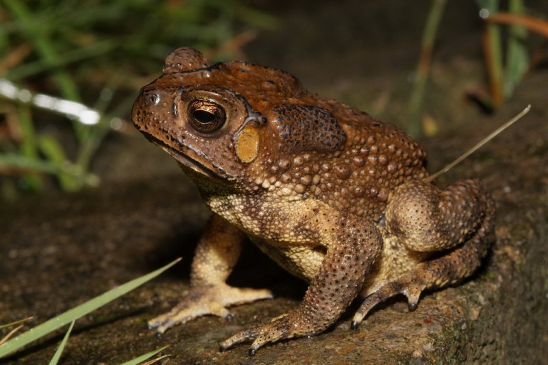
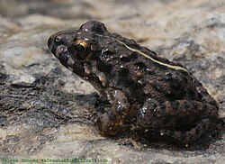
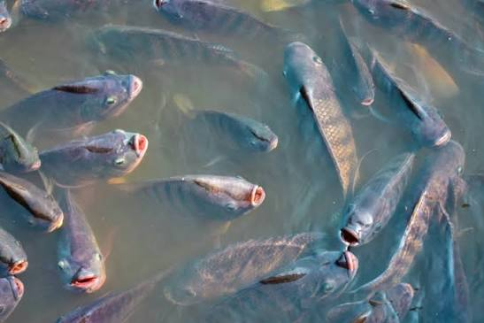
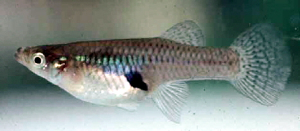
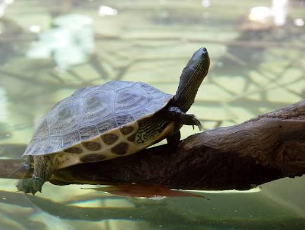
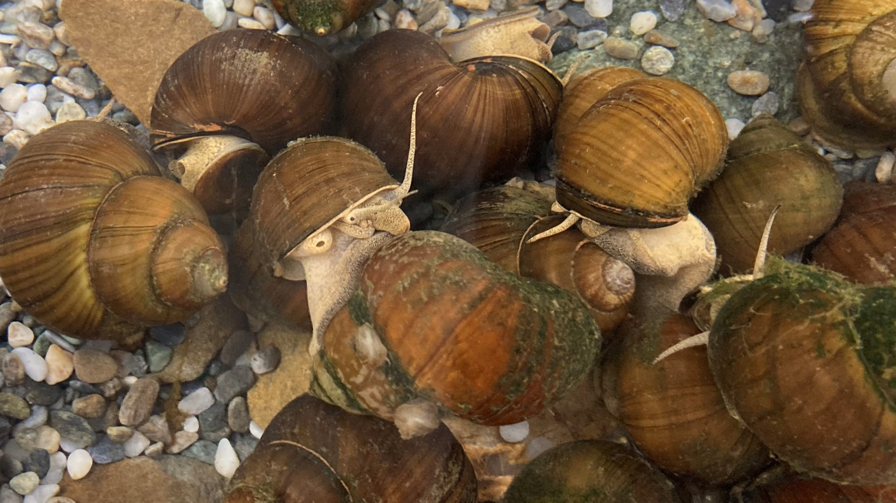

甘家堡埤塘常見動物
甘家堡埤塘周圍除了水生環境外，也有許多陸域動物活動。 牠們與埤塘的植物、水域環境共同形成完整的生態系統。

黑眶蟾蜍 Asian Common Toad
黑眶蟾蜍是臺灣常見的兩棲動物， 常出現在埤塘周邊的草地與潮濕環境， 主要以昆蟲為食，是自然環境中的重要捕食者。
了解更多
澤蛙 Paddy Frog
澤蛙喜歡生活在稻田、池塘與濕地， 繁殖季節會發出明顯的鳴叫聲， 是臺灣低海拔埤塘常見的蛙類之一。
了解更多
吳郭魚 Tilapia
吳郭魚具有很強的環境適應能力， 常見於臺灣的池塘與埤塘， 是淡水生態系中常見的魚類。
了解更多
大肚魚 Mosquitofish
大肚魚體型小，常在埤塘淺水區活動， 以蚊子的幼蟲及小型水生生物為食， 具有控制蚊蟲數量的功能。
了解更多
斑龜 Chinese Stripe-necked Turtle
斑龜是臺灣常見的淡水龜類， 會在水中活動並到岸邊曬太陽， 是埤塘生態中的代表性爬行動物之一。
了解更多
田螺 Freshwater Snail
田螺生活於淡水環境， 以藻類與有機碎屑為食， 在埤塘中扮演清理與物質循環的重要角色。
了解更多